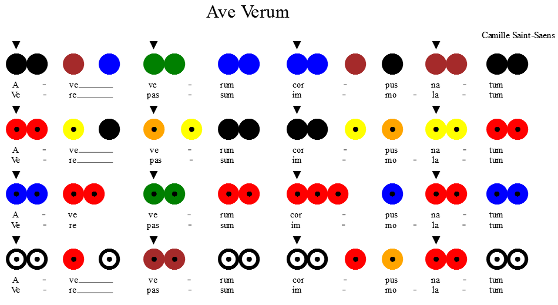

Ulwila FK Ulwila colored score generator
Using this plugin for MuseScore you can create colored scores according to the system developed by Heinrich Ullrich. For a description, look here. The FK in the project's name is related to my godson, Kristof.
Installation
Installation consists of 3 parts: we need a special font, MuseScore and the UlwilaFK plugin.
1. Installing the UlwilaFK font
Download from here: UlwilaFK.ttf, and install.
2. Install MuseScore
You can skip this step if you've already got MuseScore installed on your system. :)
Install MuseScore from here: https://musescore.org/hu
3. Install MuseScore plugin
This is a bit more complicated but you only need to do this once.
- Start and close MuseScore (I'm not sure if this step is really needed, perhaps the installer has already created the necessary folders.)
-
Download and copy ulwilafk.qml file to Documents\MuseScore2\Plugins
-
Start MuseScore. Either open an existing score (see musescore.com), or create one. (Handbook here)
Downloaded scores should be translated to C-major/A-minor (using Notes>Transpose).
- Need to do only once: Choose Plugin manager from Plugins menu and mark ulwilafk to enable it.
-
After this the Plugins menu will contain an UlwilaFK item. Clicking on this a small dialog window will appear, where pressing the Ulwila button will create the score. You can undo that with Ctrl-Z.
- Converting to Ulwila will make most of the unneeded musical signs invisible, but not all (a limitation of current MuseScore version).
The remaining can be easily made invisible by selecting them with a click and pressing the v key. The 5 staff lines can be hidden by clicking with the right button and selecting Staff properties and clicking Invisible staff lines.
Examples

(Original
here)